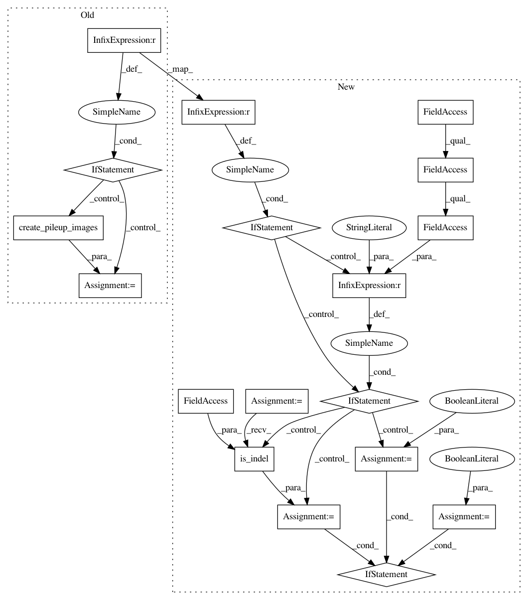

54d6ab32e0cb1c5868b41cbfa52781f265598d55,deepvariant/make_examples.py,RegionProcessor,create_pileup_examples,#RegionProcessor#Any#,1695
Before Change
dv_call.variant.reference_name, dv_call.variant.start,
dv_call.variant.reference_bases))
if self.options.pic_options.alt_aligned_pileup != "none":
// Align the reads against each alternate allele, saving the sequences of
// those alleles along with the alignments for pileup images.
alt_info_for_samples = [
self.align_to_all_haplotypes(dv_call.variant, reads)
for reads in reads_for_samples
]
// Each sample has different reads and thus different alt-alignments.
haplotype_alignments_for_samples = [
sample["alt_alignments"] for sample in alt_info_for_samples
]
// All samples share the same alt sequences, so select the first one.
haplotype_sequences = alt_info_for_samples[0]["alt_sequences"]
pileup_images = self.pic.create_pileup_images(
dv_call=dv_call,
reads_for_samples=reads_for_samples,
haplotype_alignments_for_samples=haplotype_alignments_for_samples,
haplotype_sequences=haplotype_sequences)
else:
pileup_images = self.pic.create_pileup_images(
dv_call=dv_call, reads_for_samples=reads_for_samples)
if pileup_images is None:
// We cannot build a PileupImage for dv_call, issue a warning.
logging.warning("Could not create PileupImage for candidate at %s:%s",
dv_call.variant.reference_name, dv_call.variant.start)
After Change
dv_call.variant.reference_bases))
// Decide whether each candidate needs ALT-alignment.
alt_align_this_variant = False
if self.options.pic_options.alt_aligned_pileup != "none":
if self.options.pic_options.types_to_alt_align == "indels":
alt_align_this_variant = variant_utils.is_indel(dv_call.variant)
else: // types_to_alt_align can only be "all" or "indels".
alt_align_this_variant = True
haplotype_alignments_for_samples = None
haplotype_sequences = None
if alt_align_this_variant:
// Align the reads against each alternate allele, saving the sequences of
// those alleles along with the alignments for pileup images.
alt_info_for_samples = [
self.align_to_all_haplotypes(dv_call.variant, reads)
for reads in reads_for_samples
]
// Each sample has different reads and thus different alt-alignments.
haplotype_alignments_for_samples = [
sample["alt_alignments"] for sample in alt_info_for_samples
]
// All samples share the same alt sequences, so select the first one.
haplotype_sequences = alt_info_for_samples[0]["alt_sequences"]
pileup_images = self.pic.create_pileup_images(
dv_call=dv_call,
reads_for_samples=reads_for_samples,
haplotype_alignments_for_samples=haplotype_alignments_for_samples,
In pattern: SUPERPATTERN
Frequency: 3
Non-data size: 18
Instances
Project Name: google/deepvariant
Commit Name: 54d6ab32e0cb1c5868b41cbfa52781f265598d55
Time: 2020-08-03
Author: marianattestad@google.com
File Name: deepvariant/make_examples.py
Class Name: RegionProcessor
Method Name: create_pileup_examples
Project Name: google/deepvariant
Commit Name: 0ad1524862cdbe73f51428ab2371eab5302a4885
Time: 2020-08-27
Author: pichuan@google.com
File Name: deeptrio/make_examples.py
Class Name: RegionProcessor
Method Name: create_pileup_examples
Project Name: google/deepvariant
Commit Name: 78a5e61bc11e781cba84de9d71ce1b7958c030a3
Time: 2020-08-03
Author: marianattestad@google.com
File Name: deepvariant/make_examples.py
Class Name: RegionProcessor
Method Name: create_pileup_examples